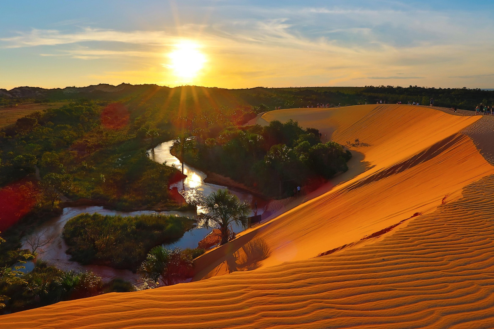
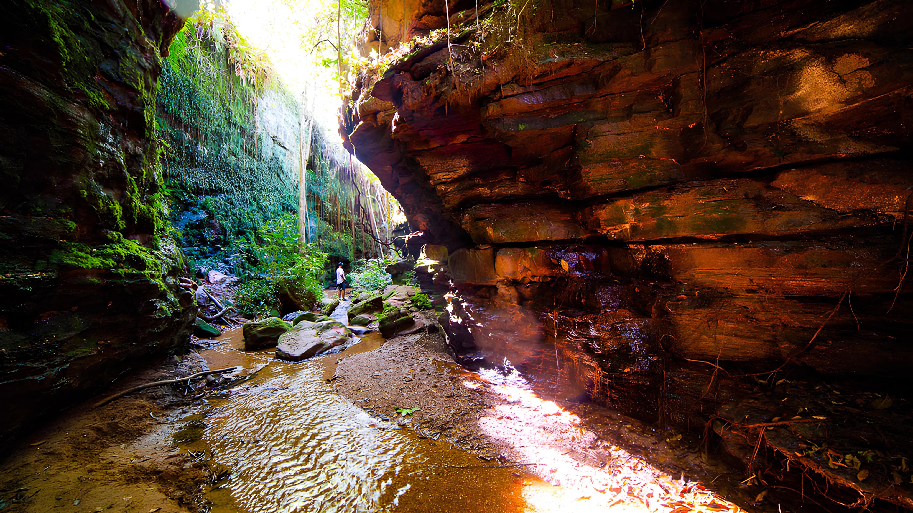
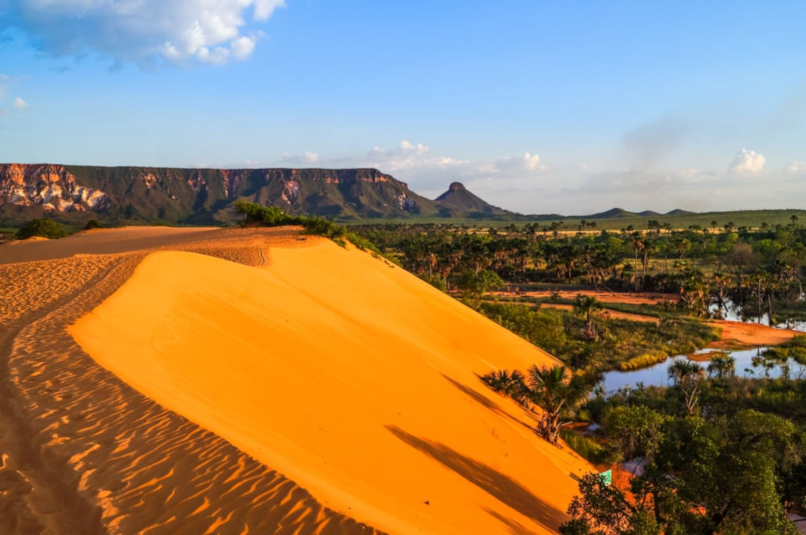
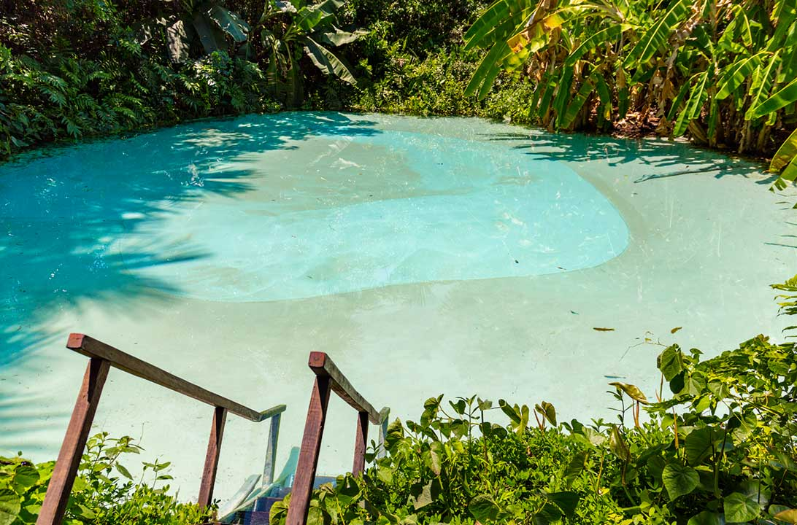

Conheça o Tocantins

Dunas
As dunas do Jalapão, localizadas em Tocantins, são grandes formações de areia que chegam a 40 metros de altura. Elas fazem parte de uma paisagem única de cerrado e oferecem vistas incríveis, especialmente ao amanhecer e ao pôr do sol. O local é ideal para quem busca contato com a natureza e tranquilidade.
Ver pacotes
Cachoeiras
As cachoeiras do Jalapão, em Tocantins, são famosas por suas águas cristalinas e paisagens deslumbrantes. Entre as mais conhecidas estão a Cachoeira da Formiga, a Cachoeira do Lajeado e a Cachoeira do Rio Novo. Com quedas d'água que variam em tamanho, elas atraem visitantes para atividades como banhos e trilhas, oferecendo um contato direto com a natureza selvagem e exuberante da região.
Ver pacotes
Pedra furada
A Pedra Furada é um dos principais atrativos turísticos do Jalapão, localizada em Tocantins. Trata-se de uma formação rochosa com um grande buraco no meio, que pode ser atravessado por visitantes. A rocha oferece uma vista incrível da paisagem ao redor, com uma vista panorâmica da vegetação e das dunas. É um ponto popular para fotos e caminhadas, sendo um dos símbolos da região.
Ver pacotes
Fervedouros
Os fervedouros do Jalapão são nascentes de água cristalina, com uma característica única: a água jorra com tanta força que impede as pessoas de afundarem, criando uma sensação de flutuação. Eles são formados por lençóis freáticos e estão espalhados pela região, oferecendo um cenário deslumbrante e tranquilo para quem visita. São ideais para banhos refrescantes e uma experiência única em meio à natureza do cerrado.
Ver pacotes